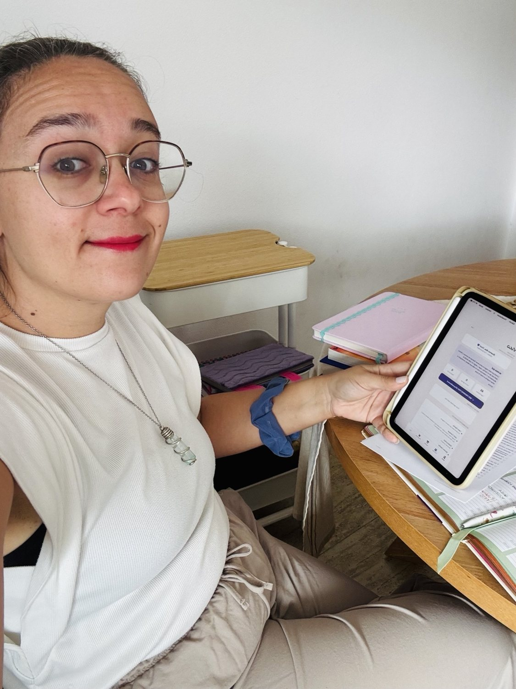
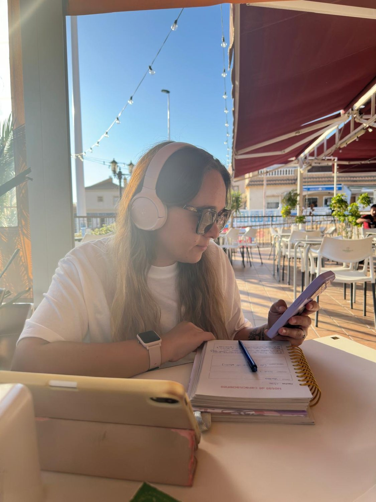
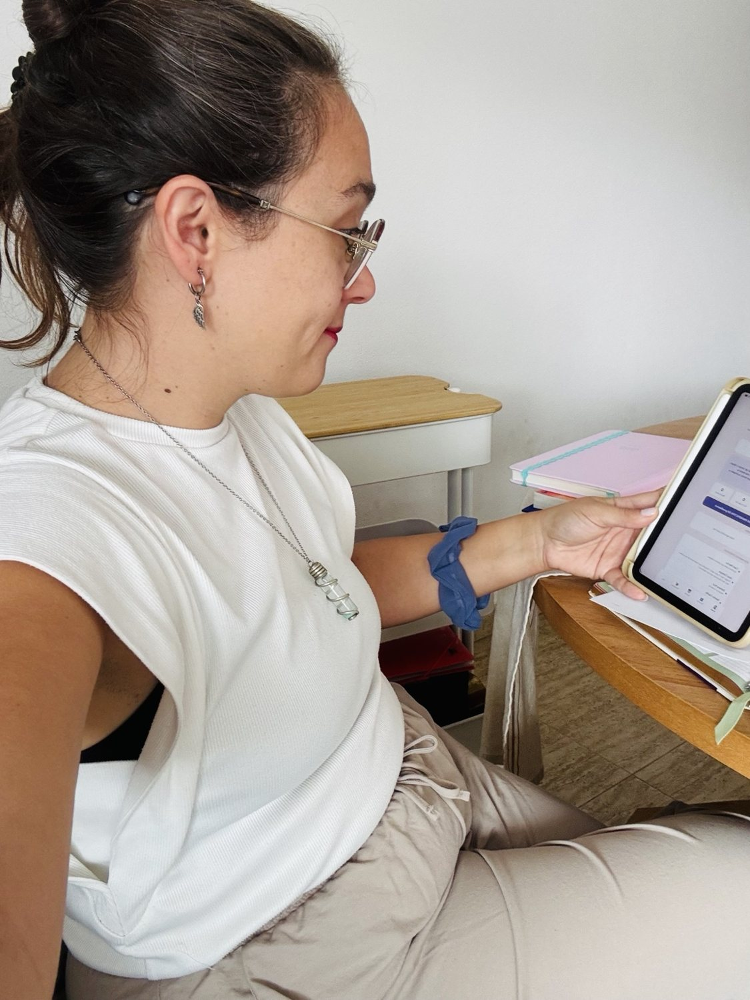

Un negocio propio.
Un camino para aprender juntas.
Una actividad comercial que combina recomendar productos de cuidado personal, atender clientas y, si lo elegís, desarrollar un equipo.
Conocé la oportunidad ↓

Un proyecto para crecer y conectar.
Quería construir un negocio que pudiera crecer conmigo. Aprender, desarrollar habilidades, conectar con otras mujeres y abrir posibilidades para mi futuro.
Crecer también es ayudar a otras a crecer.
Cuatro razones. Una visión.
Bienestar
El cuidado personal como parte de la vida cotidiana.
Libertad
Trabajar hacia una mayor autonomía y flexibilidad.
Comunidad
Aprender, crecer y compartir el camino con otras mujeres.
Y algo que atraviesa todo: el crecimiento personal y profesional.
Un negocio que se construye paso a paso.
Desarrollo una actividad comercial con una empresa de venta directa de productos de cuidado personal, nutrición y dispositivos de belleza. Podés conocer sus productos como clienta, recomendarlos como actividad comercial o desarrollar un equipo.
Consumir
Conocer y utilizar productos que te interesen.
Compartir
Recomendar productos y generar ingresos por ventas según las condiciones vigentes.
Construir
Desarrollar un equipo comercial y acompañar su crecimiento.
Un negocio real, con expectativas reales.
Los ingresos no están garantizados. Dependen de las ventas y de la actividad comercial, conforme al plan de compensación. Requiere aprendizaje, constancia y trabajo. Antes de sumarte, te explicaré los costos, las condiciones y dónde consultar la declaración oficial de ingresos.
Primero, una charla con los pies en la tierra.
Contame qué estás buscando y qué tiempo podrías dedicarle. Te explico cómo es la actividad y qué implica empezar.
Revisamos los costos, las condiciones y el plan comercial vigente para tu país. Podés hacer preguntas y tomarte tu tiempo para decidir.
Quiero construir un equipo, no una lista de personas.
Me interesa conocerte, escuchar qué buscás y acompañarte en tus primeros pasos con formación, herramientas y conversaciones reales.
Sin fórmulas mágicas ni promesas de resultados rápidos.
¿Nos tomamos un cafecito virtual? ↗